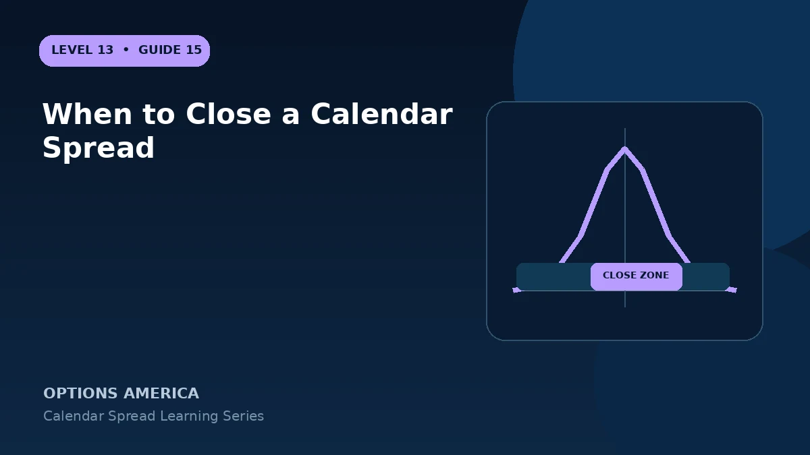

Plan profit, target, volatility, time and assignment exits for a calendar before the front option approaches expiration.
Profit target
Consider closing after the spread reaches a planned return or captures a meaningful portion of modeled potential. A broker's theoretical peak may depend on an IV assumption that will not occur.
Price exit
If the underlying moves too far from the strike or passes the target at the wrong time, delta and gamma can overwhelm theta. Define a price or loss level for reassessment.
Volatility exit
A collapse in back-month IV or adverse term-structure move can invalidate the trade even when price behaves. Monitor each expiration rather than one aggregate IV reading.
Front-expiration decision
Before the short expires, close the pair, roll the short or intentionally retain the long option. Avoid accidental assignment or an unplanned standalone option.
A practical example
A calendar bought for $1.70 can be sold for $2.45 with front expiration approaching. Closing locks about $75 rather than accepting gamma and assignment risk for an uncertain remaining peak.
This simplified example uses selected price, time and volatility assumptions; live results will differ. Live option prices also reflect the underlying price, time decay, rates, dividends, liquidity and transaction costs. Greeks are theoretical estimates, not guarantees.
Frequently asked questions
Must I wait for front expiration?
No.
Can I keep the back option?
Yes, but it becomes a separate long-option decision.
Why close both legs together?
It controls spread value and avoids temporary naked exposure.
Continue the Calendar Spreads cluster
Explore related guides: Calendar Spread: 12 Mistakes to Avoid · Calendar Spread Example With Price and Volatility Scenarios · Calendar Spread vs Vertical Spread. For a structured sequence, use the free Level 13 – Calendar Spreads course.
Options involve risk and are not suitable for every investor. This material is educational and is not investment, tax or legal advice. Greeks are theoretical estimates, and contract terms and broker requirements can vary.